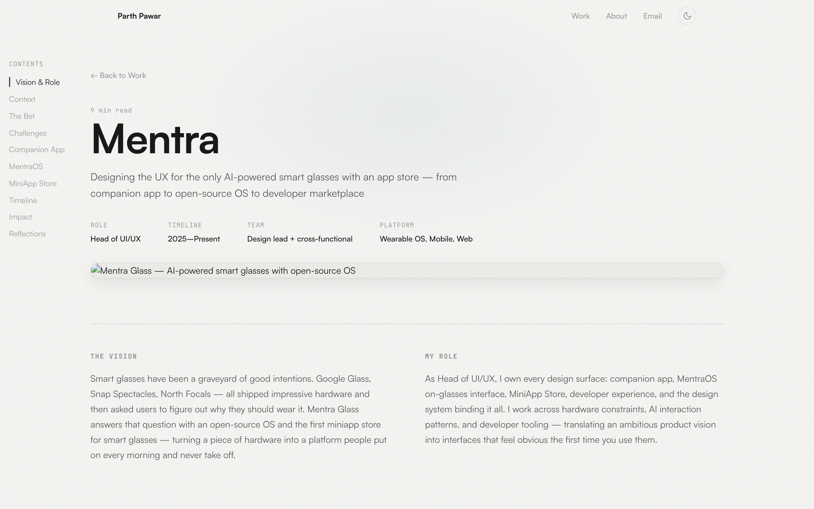

The Vision
Smart glasses have been a graveyard of good intentions. Google Glass, Snap Spectacles, North Focals — all shipped impressive hardware and then asked users to figure out why they should wear it. Mentra Glass answers that question with an open-source OS and the first miniapp store for smart glasses — turning a piece of hardware into a platform people put on every morning and never take off.
My Role
As Head of UI/UX, I own every design surface: companion app, MentraOS on-glasses interface, MiniApp Store, developer experience, and the design system binding it all. I work across hardware constraints, AI interaction patterns, and developer tooling — translating an ambitious product vision into interfaces that feel obvious the first time you use them.
A Decade of Expensive Failures
Before designing forward, I studied backward. Smart glasses have a decade-long trail of ambitious launches and quiet discontinuations. The pattern never varies: a hardware company ships something technically impressive, bundles a companion app with three features, and waits for the “ecosystem” to magically appear. It never does.
Google Glass had the sensors but no software story. Snap Spectacles had the brand but no utility past fifteen-second clips. North Focals had the elegance but no reason to exist past the first week. Every one treated software as an afterthought and developers as an audience that would show up uninvited.
The lesson: smart glasses without an ecosystem are an expensive accessory with a charging cable.
“The smartphone won because of the App Store. Smart glasses will too.”
“Every smart glasses company before us shipped hardware and hoped software would follow. We designed the software ecosystem first and built the hardware to serve it.”
— Mentra founding thesis
What Android Did for Phones, MentraOS Does for Glasses
Mentra’s thesis is simple and radical: smart glasses need an open-source OS and a developer marketplace to become a daily-wear platform. Not a better camera. Not a lighter frame. An ecosystem.
MentraOS is that ecosystem — open-source, community-driven, designed from the ground up for face-worn computing. The MiniApp Store gives developers a place to publish, users a place to discover, and the platform a reason to grow beyond what any single company could build alone.
The bet: the smart glasses that win will not have the best specs on paper. They will have the best app on your face — built by someone you have never met, for a problem only you have, found in a store that runs on your glasses.
Four Problems Nobody Had Cracked
Smart glasses are not “mobile design but smaller.” The screen is in your peripheral vision, the input is voice and gesture, and the context is the real world. Every assumption from a decade of screen design had to be thrown out.
The Control Center in Your Pocket
The companion app is not a remote control — it is the bridge between your phone and your face. It handles everything the glasses should not: deep configuration, miniapp management, firmware updates, AI settings.
Pairing was the first interaction I obsessed over. Bluetooth pairing is traditionally a five-minute frustration. I designed a one-tap flow — scan the QR code on the glasses case, connection established, personalized home screen — all in under thirty seconds.
Beyond onboarding, the app is the management layer for the entire ecosystem: browse miniapps, configure per-app notifications, adjust display settings, manage privacy. I built it on a single-tab architecture — everything is two taps away.
An OS That Disappears Until You Need It
MentraOS is open-source — a product decision that became the defining design constraint. An open OS means developers will build things I cannot predict, on a display I cannot control, for users I will never meet. The design system had to be opinionated enough to feel cohesive and flexible enough for miniapps that do not exist yet.
The HUD operates on a principle I call “glance, don’t gaze.” Every piece of information must be understood in under two seconds of peripheral attention.
Voice-First, Screen-Second
Voice is the primary input. The AI handles natural language queries, contextual responses from the camera feed, and proactive suggestions from time and location. Visual feedback is minimal by design: a thin amber waveform that pulses while listening and settles when processing.
Notification Architecture
On glasses, every notification competes with reality. I designed three tiers: ambient (subtle color shift at the frame edge), informational (translucent one-line card), and urgent (persistent card with haptic pulse requiring voice dismissal). Users assign tiers per app, and MentraOS learns from behavior.
The App Store That Lives on Your Face
This is what separates Mentra from everything else. Meta Ray-Ban Gen 2 ships at the same $299 price point but is a closed system. Mentra is the opposite: an open marketplace where any developer can ship.
Designing a store for a HUD meant rethinking every convention. No icon grid. No screenshot carousel. The on-glasses store is voice-navigated and context-curated.
Discoverability Without Browsing
The store surfaces miniapps from three signals: what you are doing, where you are, and what you are asking for. The result feels less like a catalog and more like a knowledgeable friend who always knows the right tool.
Developer Experience
I designed the portal and SDK docs with the same care as the consumer product. Submission is three steps: upload, metadata, review. The docs follow a “first miniapp in 15 minutes” philosophy.
“An app store on your face sounds absurd until you use it. Then every other pair of smart glasses feels like a flip phone.”
— Early beta tester feedback
From Zero to Shipping Product
Building the UX for an entirely new product category meant evolving the design as our understanding of face-worn computing deepened. Here is how the product and its design language matured.
Foundation & Research
Competitive audit of every smart glasses product since Google Glass. Established core UX principles: glance-not-gaze, voice-first input, and peripheral-priority information hierarchy. Built the initial design system for MentraOS.
Companion App & Onboarding
Designed and iterated the companion app from wireframes to high-fidelity. Reduced the onboarding flow from twelve steps to four. Validated the one-tap QR pairing pattern with hardware prototypes.
MentraOS HUD & Notification System
Developed the three-tier notification architecture. Iterated the HUD layout through Protopie simulations and on-device testing. Established the amber waveform as the AI's visual signature.
MiniApp Store & Developer Platform
Shipped the MiniApp Store design with voice-navigated browsing. Built the developer portal, SDK documentation, and submission flow. Designed the review and curation system.
Launch & Iteration
Mentra Glass shipped at $299 with Batch 2 at 88% claimed. Ongoing iteration on the design system based on developer and user feedback. Expanding the notification architecture with AI-driven priority learning.
Shipping, Not Pitching
Mentra Live is not a concept deck. It is shipping at $299, backed by the founders of YouTube, Android, and Pebble — plus Y Combinator, Amazon, and Toyota Ventures. Press coverage spans Forbes, GamesBeat, Gizmodo, Android Police, and 9to5Google.
“Backed by the founders of YouTube, Android & Pebble — plus Y Combinator, Amazon & Toyota Ventures.”